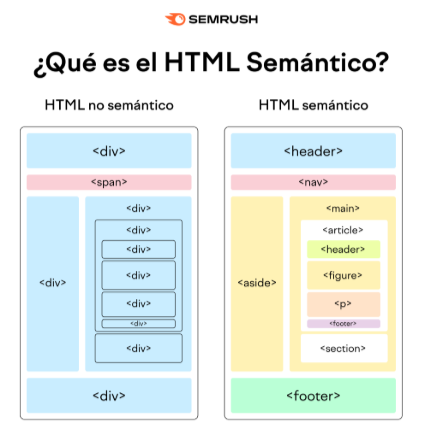

Contenido principal
Este es el contenido principal de la página.
Este es un párrafo, se utiliza para agrupar texto y darle formato.
Existen etiquetas abiertas y cerradas. Las etiquetas abiertas no tienen una etiqueta de cierre correspondiente, mientras que las etiquetas cerradas tienen una etiqueta de cierre.
Las etiquetas pueden contener imágenes, enlaces u otros elementos HTML.
Pero las etiquetas son más que solo contenido, pueden tener características especiales llamados atributos.
Los atributos son valores que se asignan a las etiquetas para modificar su comportamiento o apariencia.
Por ejemplo, el atributo "src" en la etiqueta "img" especifica la URL de la imagen a insertar. El atributo alt proporciona un texto alternativo para la imagen.
Existen distintos atributos como "class", "id", "style", etc. Los más importantes son "class" y "id".
El atributo "class" se utiliza para asignar una o más clases a una etiqueta, lo que permite aplicar estilos CSS.
El atributo "id" se utiliza para asignar un identificador único a una etiqueta, lo que permite identificarla de forma específica.
El atributo "style" se utiliza para aplicar estilos CSS directamente a una etiqueta.
Las listas pueden ser ordenadas (ol) o desordenadas (ul).
Las listas ordenadas utilizan números para enumerar los elementos, mientras que las listas desordenadas utilizan viñetas.
Cada elemento de una lista se define con la etiqueta "li".
Se puede definir como serán las viñetas o números de las listas con el atributo type. Por ejemplo:
Para más información sobre listas, puedes consultar la documentación de HTML en el sitio web de Mozilla.
Los formularios se utilizan para recopilar información del usuario.
Cada campo de un formulario se define con la etiqueta "input".
Para más información, puedes consultar la documentación de HTML en el sitio web de Mozilla.
Las tablas se utilizan para organizar datos en filas y columnas.
| Nombre | Edad | Ciudad |
|---|---|---|
| Alice | 30 | Madrid |
| Bob | 25 | Barcelona |
| Charlie | 35 | Valencia |
Para más información sobre tablas, puedes consultar la documentación de HTML en el sitio web de Mozilla.
HTML también permite la inclusión de contenido multimedia como audio y video.
Para más información sobre multimedia, puedes consultar la documentación de HTML en el sitio web de Mozilla para audio y sitio web de Mozilla para video.
La semántica en HTML se refiere al uso de etiquetas que describen el significado del contenido, en lugar de solo su apariencia.
Las etiquetas semánticas ayudan a los motores de búsqueda y a los lectores de pantalla a entender mejor el contenido de la página.
Algunos ejemplos de etiquetas semánticas son:
Este es el contenido principal de la página.
Las secciones semánticas ayudan a estructurar el contenido de la página de manera más clara y organizada.
Esta es una sección de ejemplo.
A continuación, una imagen que explica la semántica:

Para más información sobre semántica, puedes consultar la documentación de HTML en el sitio web de Mozilla para header, sitio web de Mozilla para nav, sitio web de Mozilla para main y sitio web de Mozilla para footer.